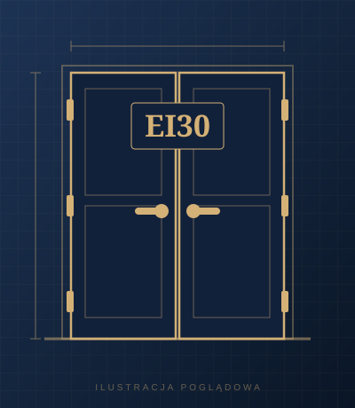
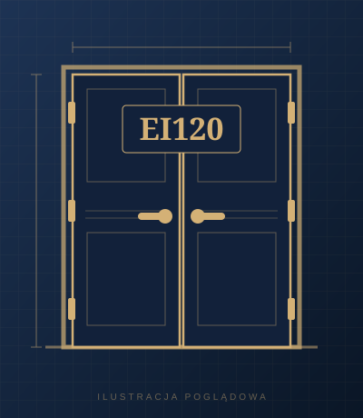
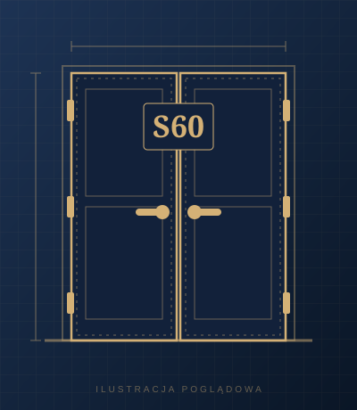

Strona główna › Dwuskrzydłowe
Drzwi dwuskrzydłowe
Drzwi dwuskrzydłowe do szerokich otworów: przeciwpożarowe EI30, EI60, EI120 i dymoszczelne S60, z regulatorem kolejności zamykania skrzydeł.

Dwuskrzydłowe
Drzwi dwuskrzydłowe przeciwpożarowe EI30
Dwuskrzydłowe drzwi o odporności ogniowej 30 minut do pomieszczeń technicznych i komórek lokatorskich.
Szczegóły
Dwuskrzydłowe
Drzwi dwuskrzydłowe przeciwpożarowe EI60
Dwuskrzydłowe drzwi o odporności ogniowej 60 minut do stref pożarowych i komórek lokatorskich.
Szczegóły

Dwuskrzydłowe
Drzwi zewnętrzne dwuskrzydłowe przeciwpożarowe EI120
Dwuskrzydłowe drzwi zewnętrzne kierunkowe o odporności ogniowej 120 minut.
Szczegóły

Dwuskrzydłowe
Drzwi dwuskrzydłowe dymoszczelne S60
Dwuskrzydłowe drzwi kierunkowe z klasą dymoszczelności S60 do dróg ewakuacyjnych.
Szczegóły
Pozostałe kategorie:Wewnętrzne przeciwpożaroweDymoszczelneAkustyczneZewnętrzneAntywłamanioweAkcesoria
Nie widzisz modelu, którego szukasz? Dobierzemy drzwi do Twojego otworu.